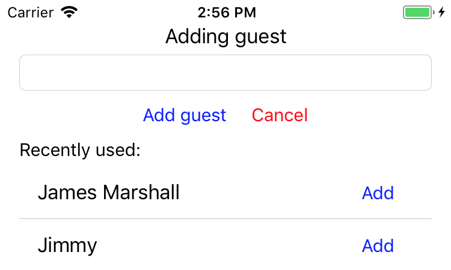

Open Tables view and select required table.
Table session is created by adding the first guest. To add guest, you should press add guest button. There are four main buttons for table management:
1. Add quick guest button. Once pressed - "quick" guest will be added. This kind of guest will be named like "Guest N", where N is number of all guests + 1. For example: Guest 2, Guest 3.
2. Add custom guest button. Once pressed - custom guest popover will appear.
3. Move guests button. Once pressed - move guests popover will appear.
4. Add order button. Once pressed - menu popover will appear.
5. Refresh button. Once pressed - view will be refreshed - timings or amount will be updated, if time cafe setting was enabled.

Once first guest is added, table will be opened and you will be able to add orders.
To add new order, press plus button:
Once pressed, menu popover will appear. Choose required menu item and press on it to add.
To increase or decrease quantity of ordered item, press respective button in table view cell.
To remove active order, perform swipe from right to left:
To add individual orders - press on menu icon in guest cell and choose item to add. To view orders of specific guest, press on guest cell to expand guest orders.
Changing and removal of individual orders are performed the same way as table orders.
If you need to move guests from current table to another, press move guests button. Then you should choose target table. All guests and orders will be moved.
If you need to move one guest from current table to another, perform swipe to the left on guest cell, press "Move" button and select target table in appeared view. Single guest can be moved only to already opened table.
To close guest, press close button for required guest.
WARNING! After guest is closed, you will be not able to activate him again. You will be able to change his name, timings or remove him.
If you want to rename or remove guest, perform swipe from right to left and choose action.
If guest is closed, you can rename or remove guest and also - change guest's arrival and departure time.
When all guests have gone, you need to close session. To do this - press respective button. When you press Checkout button, popover will appear. Here you can just close session with current amount or you can round amount/apply discount. Once table session is closed, all data will be moved to archive and will be available in Reports and History.